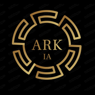
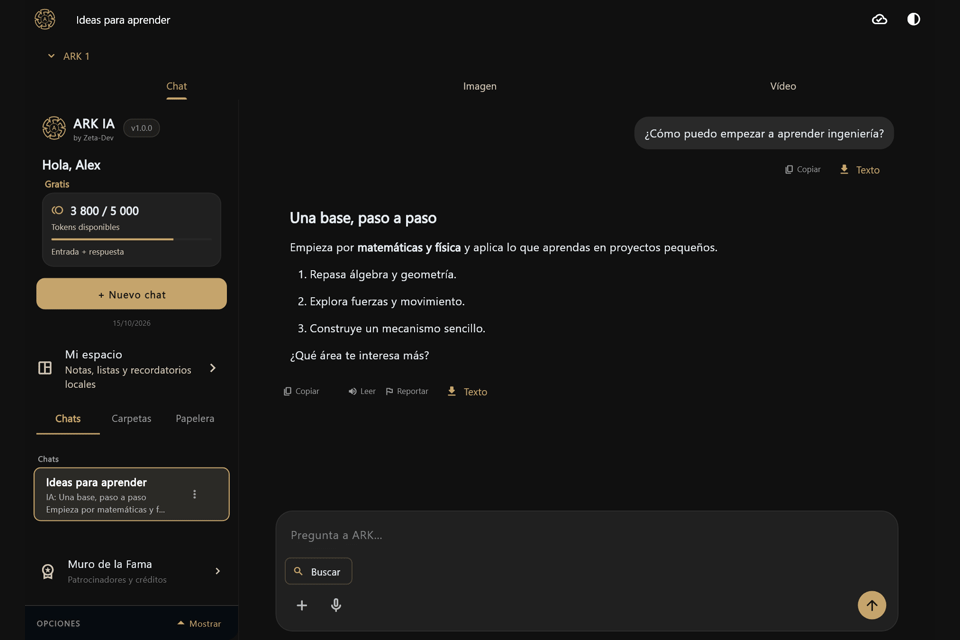
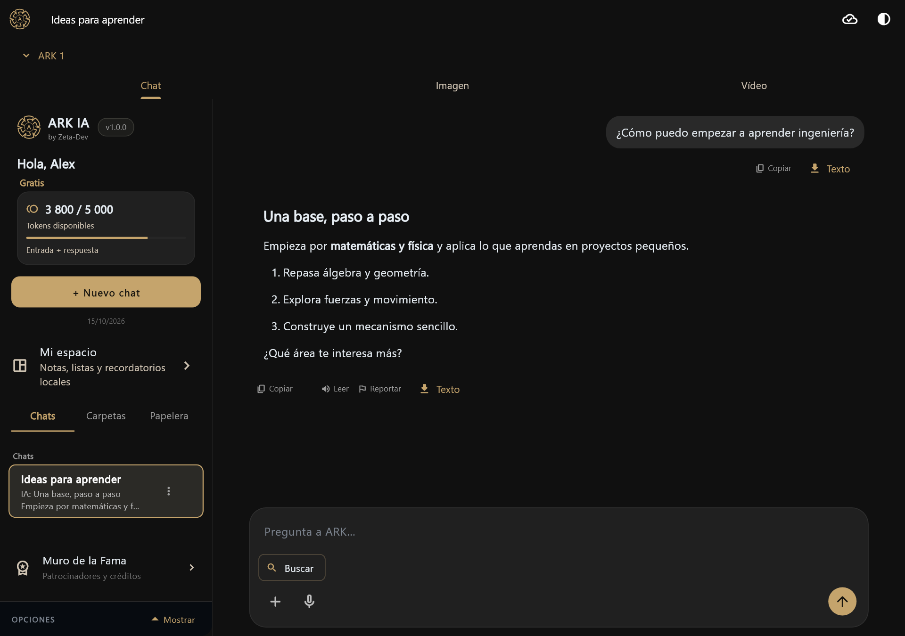
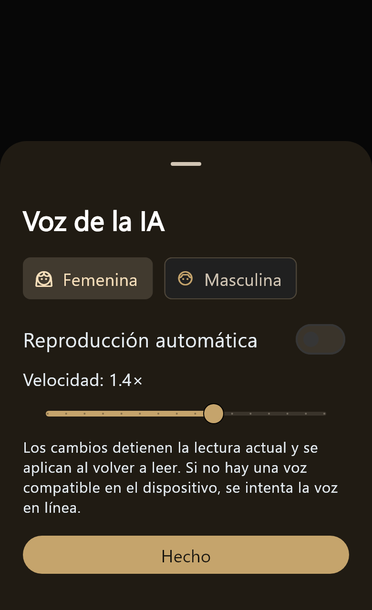

KI im Gespräch
Ein klarer Chatbereich mit formatierten Antworten und Spracheingabe oder Vorlesen.

ARK IAZETA-DEV · GUATEMALAEIN PERSÖNLICHES SOFTWAREPROJEKT
ARK IA verbindet KI-Unterhaltungen mit Sprache, persönlicher Organisation und einer lokal arbeitenden Bildschirmübersetzung für Android.

DAS PROJEKT
ARK IA ist aus einem Kotlin-Prototyp gewachsen und wurde als Flutter-App für Android und Windows weiterentwickelt. Die Idee: hilfreiche Werkzeuge an einem Ort verbinden und auf verschiedenen Geräten nutzbar machen.
Ein klarer Chatbereich mit formatierten Antworten und Spracheingabe oder Vorlesen.
Chats, Notizen, Listen und Erinnerungen helfen, Gedanken übersichtlich zu halten.
Auf Android erkennt und übersetzt ARK freigegebenen Bildschirmtext mit heruntergeladenen Modellen lokal.
TECHNISCHER ÜBERBLICK
Die Oberfläche und Plattformfunktionen sind in Flutter und Dart umgesetzt. Firebase unterstützt Anmeldung und ausgewählte Synchronisierung; geschützte Serverdienste verbinden die App mit KI-Funktionen.
Technische Fallstudie lesenEINE TECHNISCHE HERAUSFORDERUNG
Die Android-Bildschirmübersetzung verbindet Systemfreigabe, Texterkennung, lokale Sprachmodelle und eine schwebende Oberfläche. Der Nutzer startet jede Sitzung und jede Übersetzung selbst.
Entscheidungen ansehenAndroid fragt vor dem Start nach Zustimmung.
Text wird erst nach einer Nutzeraktion gelesen.
Heruntergeladene ML-Kit-Modelle übersetzen lokal.
Das Ergebnis erscheint in einer anpassbaren Blase.
AUSGEWÄHLTES CODEBEISPIEL
Dieses eigenständige Flutter-Beispiel zeigt, wie eine Berührung eine sanfte Rückmeldung auslöst. Es ist ein bewusst begrenzter Einblick in die UI-Arbeit des Projekts.
Beispiel im Repository öffnenGestureDetector(
onTapDown: (_) => _setPressed(true),
onTapUp: (_) => _setPressed(false),
onTapCancel: () => _setPressed(false),
onTap: widget.onTap,
child: AnimatedScale(
scale: _pressed ? widget.scaleDown : 1.0,
duration: widget.duration,
curve: Curves.easeOut,
child: widget.child,
),
)Vereinfachter Ausschnitt · vollständiges Beispiel im Repository
EINBLICKE


DIE IDEE DAHINTER
ARK IA ist ein laufendes Lern- und Entwicklungsprojekt. Dieses Portfolio zeigt ausgewählte Entscheidungen und Arbeitsergebnisse, während der vollständige App-Code privat bleibt.
ARK IA kennenlernen